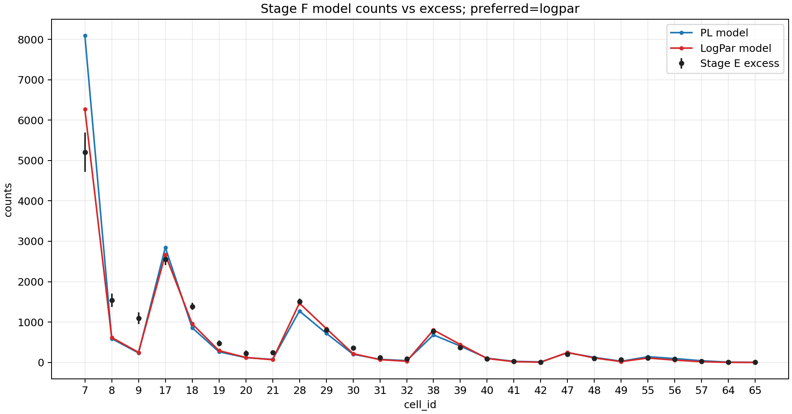
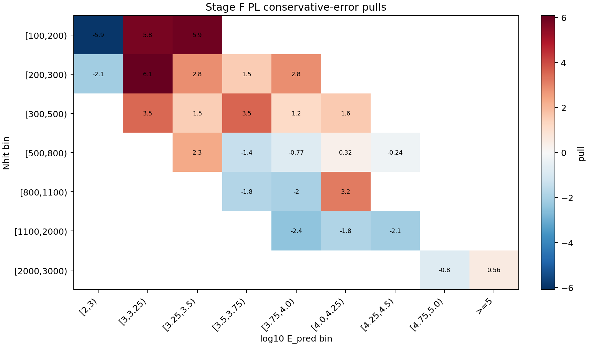
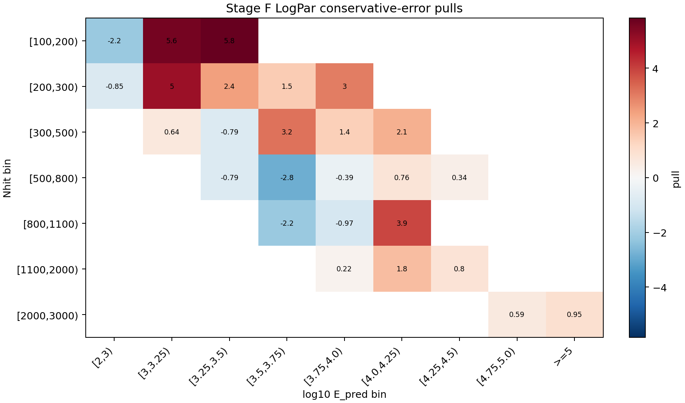

Stage F 前向折叠拟合报告
本页记录当前 Stage F 的目的、输入、方法和结果：把假设的 Crab 能谱通过 Stage A 二维响应折叠到观测 cell，与 Stage E 的逐 cell excess 做拟合对比。当前报告使用 selector v2_baseline26，作为进入 Stage G 的 diagnostic baseline。
结论摘要
保守误差口径下，当前首选模型是 logpar。Reference-count preflight 状态为 passed，该 run 的状态是：可作为 Stage G diagnostic baseline。
v2_baseline2615132.3，Stage E excess 为 17457，observed/expected = 1.15363。
为什么做 Stage F
Stage A 给出 MC 响应 A_eff(E_true, theta)，Stage E 给出观测侧每个 cell 的 N_on、背景期望 B_on 和 excess。Stage F 的作用是把二者接起来：不从 E_pred 反推真实能量，而是把一个物理能谱假设从真实能量空间前向折叠到观测 cell 空间，再和 Stage E excess 比较。
这一步有两个检查目标：第一，确认 Stage A 的绝对响应归一化和 Stage E 的信号量级在同一数量级；第二，为 Stage G 的 SED 点提供一个冻结谱形的全局拟合基准。
Stage F 做了什么
本 run 读取 Stage A 的二维响应和 Stage E 的逐 cell 信号表，按 Crab 在观测窗口内的天顶角曝光分布计算每个 cell 的预期信号数。拟合统计量是保守误差口径下的 chi-square：
chi2 = sum_b ((excess_b - N_exp,b) / sigma_b)^2
谱模型包括幂律 PL 和 LogPar。LogPar 只有在相对 PL 的 chi2 改善达到阈值时才作为首选；本 run 的改善量为 69.2369，因此保留 PL。
- Stage A response:
/mnt/mydisk/server/projects/energy_reconstruction/apply/output/stage_a_v2_raw65/response_2d_v2_raw65.npz - Stage E signal:
/mnt/mydisk/server/projects/energy_reconstruction/apply/output/stage_e_v2_raw65/runs/v2_stage_e_slurm_42014/signal_v2_raw65.npz - Cell subset:
/mnt/mydisk/server/projects/energy_reconstruction/apply/config/cell_selector_v2_baseline26.csv
Cell subset 说明
Stage F 不在拟合中按 residual 自动删 cell；include/exclude 完全来自传入的 selector CSV。selector 中的排除原因会记录在 metadata，用于区分 frozen baseline、transition probe 和 diagnostics。
- Included cells:
7, 8, 9, 17, 18, 19, 20, 21, 28, 29, 30, 31, 32, 38, 39, 40, 41, 42, 47, 48, 49, 55, 56, 57, 64, 65 - Excluded cells:
1, 2, 3, 4, 5, 6, 10, 11, 12, 13, 14, 15, 16, 22, 23, 24, 25, 26, 27, 33, 34, 35, 36, 37, 43, 44, 45, 46, 50, 51, 52, 53, 54, 58, 59, 60, 61, 62, 63
拟合参数
- PL:
phi0=2.624726e-12,gamma=2.63136, p-value1.7419e-36，chi2/ndof =234.7/24。 - LogPar:
phi0=3.055245e-12,alpha=2.81046,beta=0.18504, p-value1.5426e-23，chi2/ndof =165.46/23。
逐 cell 残差
| cell | Nhit bin | log10 E_pred bin | excess | err | PL model | PL pull | LogPar model | LogPar pull |
|---|---|---|---|---|---|---|---|---|
| 7 | [100,200) | [2,3) | 5203.98 | 487.96 | 8097.71 | -5.9302 | 6270.04 | -2.1847 |
| 8 | [100,200) | [3,3.25) | 1539.88 | 164.41 | 589.739 | 5.7791 | 618.31 | 5.6054 |
| 9 | [100,200) | [3.25,3.5) | 1098.09 | 145.45 | 234.627 | 5.9365 | 249.074 | 5.8371 |
| 17 | [200,300) | [2,3) | 2549 | 141.31 | 2847.14 | -2.1098 | 2669.49 | -0.85264 |
| 18 | [200,300) | [3,3.25) | 1388.72 | 86.748 | 859.994 | 6.095 | 956.962 | 4.9772 |
| 19 | [200,300) | [3.25,3.5) | 468.659 | 73.262 | 262.419 | 2.8151 | 292.216 | 2.4084 |
| 20 | [200,300) | [3.5,3.75) | 224.14 | 68.249 | 119.379 | 1.535 | 123.409 | 1.4759 |
| 21 | [200,300) | [3.75,4.0) | 241.194 | 58.744 | 74.7741 | 2.833 | 66.1056 | 2.9806 |
| 28 | [300,500) | [3,3.25) | 1510.7 | 67.995 | 1273.22 | 3.4926 | 1467.45 | 0.63608 |
| 29 | [300,500) | [3.25,3.5) | 799.135 | 51.116 | 721.332 | 1.5221 | 839.393 | -0.78757 |
| 30 | [300,500) | [3.5,3.75) | 353.888 | 42.686 | 203.431 | 3.5247 | 219.119 | 3.1572 |
| 31 | [300,500) | [3.75,4.0) | 125.568 | 40.699 | 76.1879 | 1.2133 | 68.2652 | 1.408 |
| 32 | [300,500) | [4.0,4.25) | 94.6085 | 31.327 | 44.4157 | 1.6022 | 30.0478 | 2.0609 |
| 38 | [500,800) | [3.25,3.5) | 771.378 | 39.225 | 681.407 | 2.2937 | 802.242 | -0.78684 |
| 39 | [500,800) | [3.5,3.75) | 366.324 | 27.417 | 405.372 | -1.4242 | 444.258 | -2.8426 |
| 40 | [500,800) | [3.75,4.0) | 89.1309 | 19.669 | 104.354 | -0.77395 | 96.8432 | -0.39211 |
| 41 | [500,800) | [4.0,4.25) | 32.1791 | 17.828 | 26.5624 | 0.31506 | 18.5896 | 0.76228 |
| 42 | [500,800) | [4.25,4.5) | 9.50045 | 11.769 | 12.3377 | -0.24108 | 5.45674 | 0.3436 |
| 47 | [800,1100) | [3.5,3.75) | 206.784 | 18.794 | 240.263 | -1.7814 | 247.921 | -2.1888 |
| 48 | [800,1100) | [3.75,4.0) | 95.7297 | 14.432 | 124.232 | -1.975 | 109.744 | -0.9711 |
| 49 | [800,1100) | [4.0,4.25) | 66.9559 | 11.96 | 29.2419 | 3.1533 | 20.5358 | 3.8812 |
| 55 | [1100,2000) | [3.75,4.0) | 111.432 | 12.271 | 141.435 | -2.4451 | 108.674 | 0.22476 |
| 56 | [1100,2000) | [4.0,4.25) | 76.1351 | 10.482 | 95.52 | -1.8494 | 57.0311 | 1.8226 |
| 57 | [1100,2000) | [4.25,4.5) | 24.5676 | 7.9644 | 41.614 | -2.1403 | 18.163 | 0.80414 |
| 64 | [2000,3000) | [4.75,5.0) | 3.32432 | 4.3215 | 6.80042 | -0.80437 | 0.790231 | 0.58639 |
| 65 | [2000,3000) | >=5 | 6.02703 | 5.9977 | 2.6465 | 0.56363 | 0.334199 | 0.94916 |
结果图



